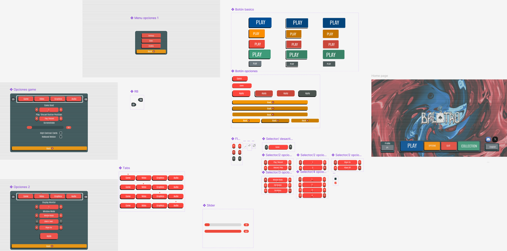
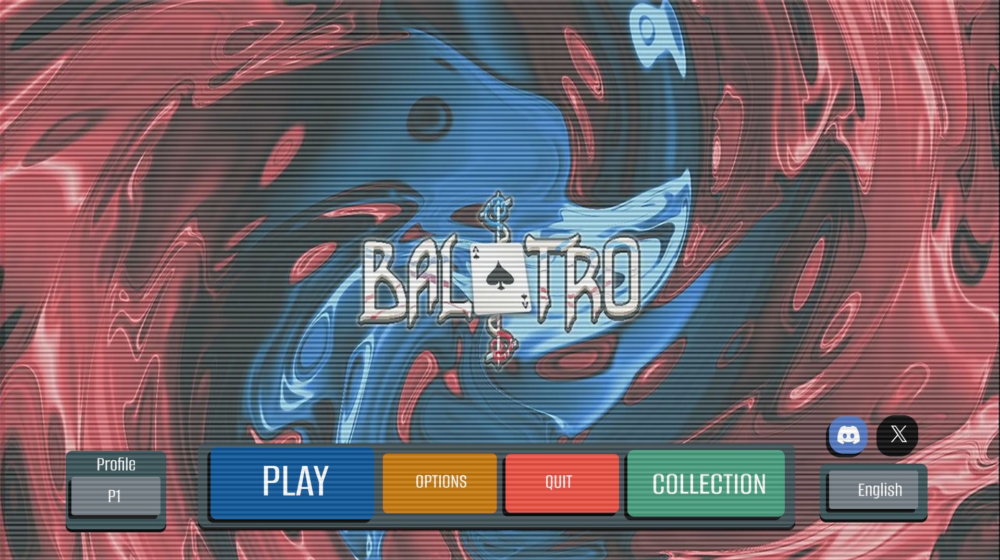

Reconstrucción de Sistema UI/UX en Figma
Diseño atómico, componentes dinámicos y arquitectura de menús (Caso de estudio: Balatro UI)
En este proyecto de ingeniería inversa de interfaz, despiecé y reconstruí la experiencia de usuario (UI/UX) de un sistema de menús complejo. El objetivo principal fue trasladar una interfaz gráfica completa a un Design System estructurado dentro de Figma.

Diseño Atómico y Componentes Reutilizables
En lugar de diseñar pantallas estáticas, creé un sistema de diseño atómico: definiendo componentes base (botones, selectores, pestañas y sliders), variantes de estado (default, hover, active) y compatibilidad con navegación mediante controlador (mapas de botones LB/RB). Esto facilita la escalabilidad y posterior implementación en motores de videojuegos como Unity o Unreal Engine.
